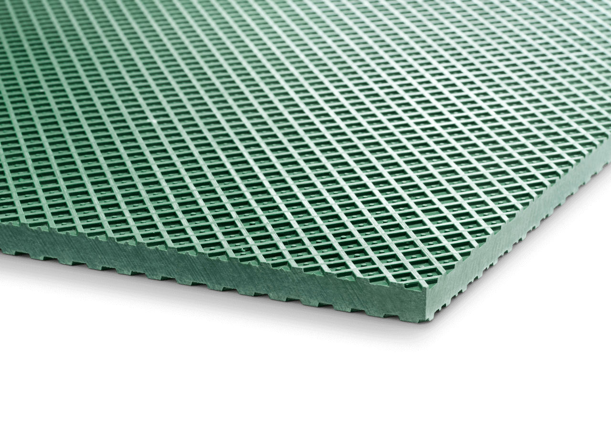
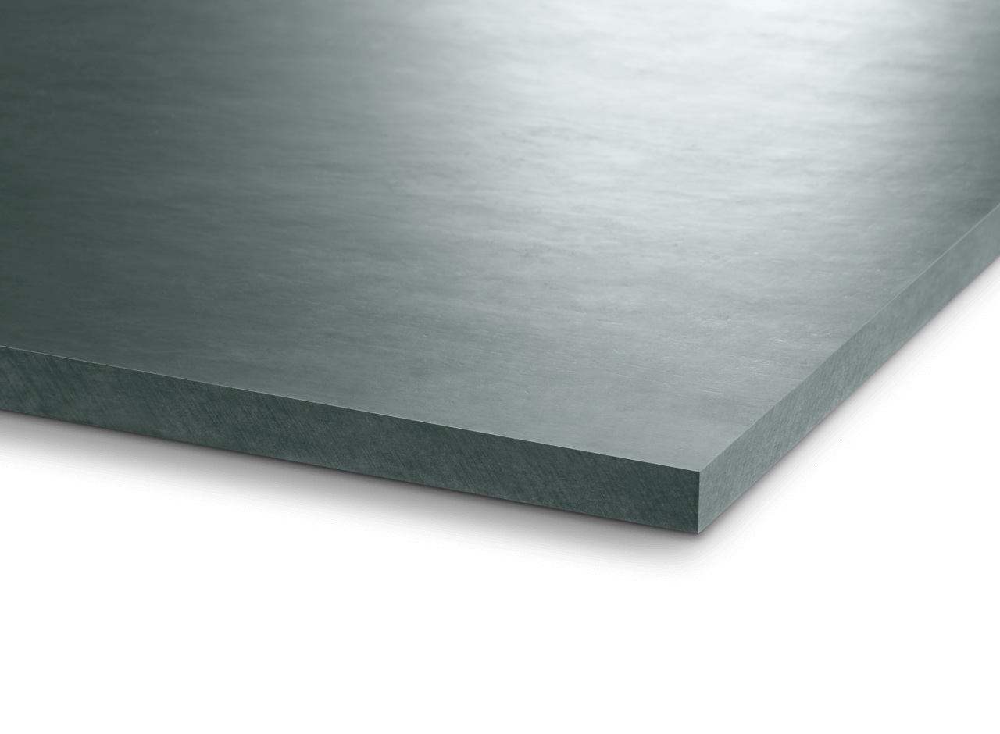
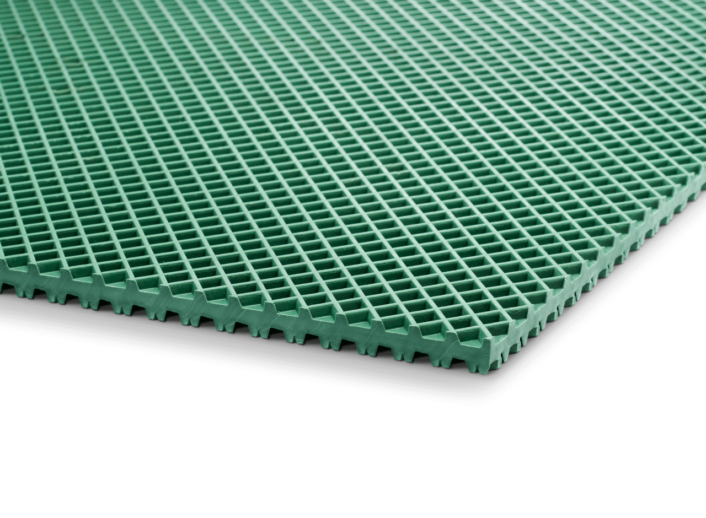
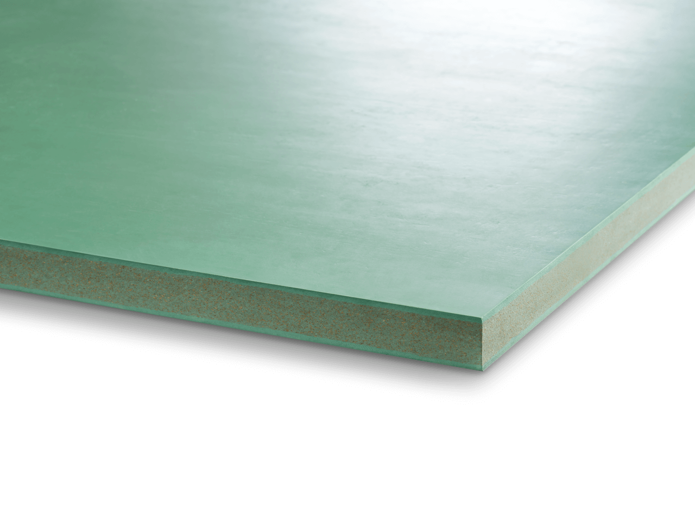
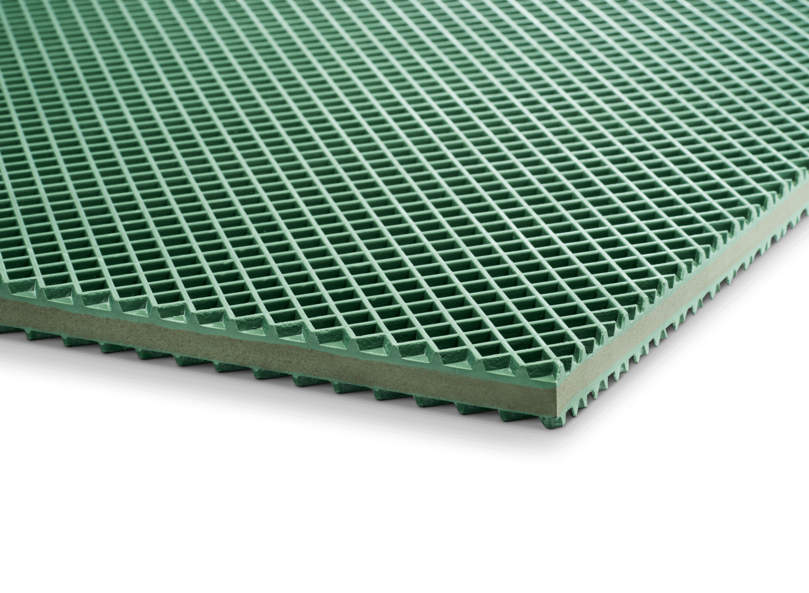
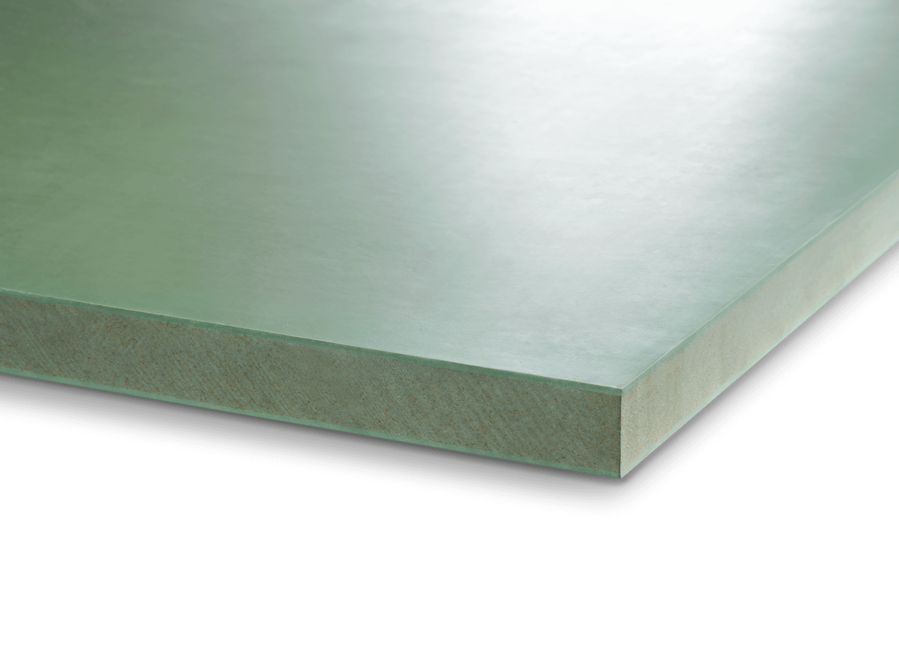
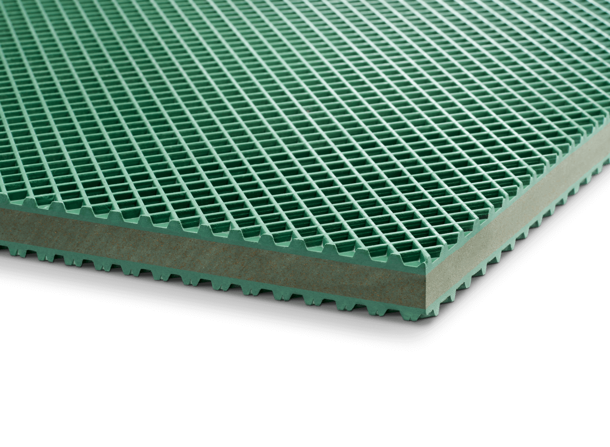
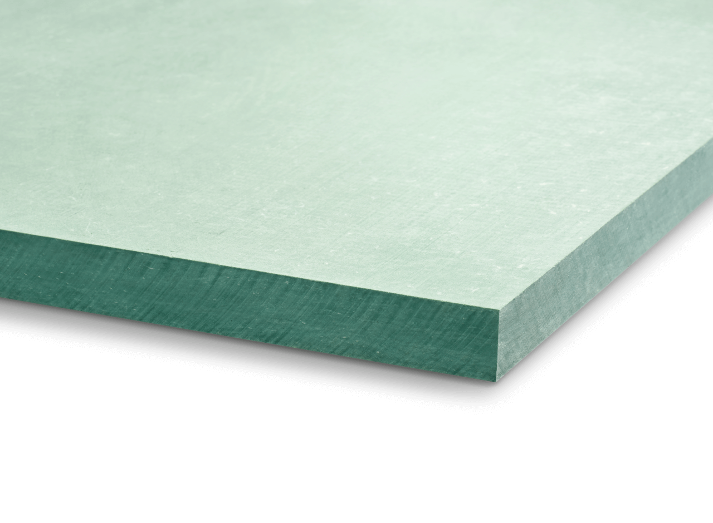

Warianty mat antywibracyjnych
Szeroki wybór materiałów i twardości dla różnych zastosowań i obciążeń.

Typ B0
Mata bez profilu o bardzo wysokiej stałości poziomu. Do maszyn o małej własnej sztywności (centra obróbcze, tokarki, szlifierki).
Zobacz szczegóły →
Typ B4
Bardzo uniwersalna mata — do maszyn narzędziowych, do tworzyw i drukarskich; dobra przy skłonności maszyny do „wędrowania".
Zobacz szczegóły →
Typ B6
Mata bez profilu, ekstremalnie wysoka nośność i najwyższa stałość poziomu. Do bardzo ciężkich maszyn długołożowych.
Zobacz szczegóły →
Typ B13W
Najwyższe wartości izolacji, układana do 6 warstw. Idealna jako zestaw płyt do izolacji fundamentów.
Zobacz szczegóły →
Typ B30
Miękka mata bez profilu. Skuteczna izolacja przy montażu na stropach (piętrowym).
Zobacz szczegóły →
Typ B30W
Bardzo miękka, niskoczęstotliwościowa. Do maszyn pomiarowych, wag i mikroskopów.
Zobacz szczegóły →
Typ B32
Miękka mata bez profilu, znakomita izolacja. Do średnich pras i wykrawarek.
Zobacz szczegóły →

Typ B50
Do maszyn o dużej dynamicznej sile zakłócającej i małej powierzchni podparcia (prasy, wykrawarki, nożyce).
Zobacz szczegóły →